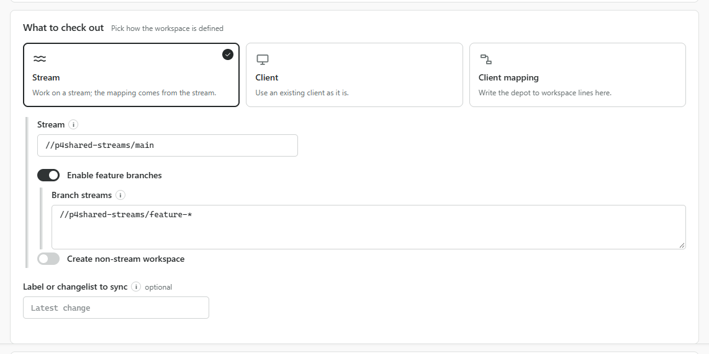

Perforce streams
Build one stream, or every stream that matches a pattern, without writing view lines.
When to use it
Use streams when your depot uses Perforce streams, such as //skyforge/main, //skyforge/dev-ai and //skyforge/release-1.4. A stream defines its own view, so Buildspawn makes the workspace for you.
How to set it up
One stream
- Open a Perforce root and, under What to check out, choose the Stream card.
- Type the stream in Stream, for example
//skyforge/main. A parameter works://skyforge/${BRANCH}. - Click Test connection, then Create root or Save.
With Perforce Software, choose Streams (view generated by Perforce for each node) and type the Stream Codeline.
Many streams in one build configuration
- On the root, tick Enable feature branches.
- In Branch streams, type one pattern per line, for example:
//skyforge/dev-* -://skyforge/dev-sandbox*is a wildcard. A line starting with-:leaves a stream out. The last matching line decides. - Click Save.

Every field
| Field | What it does | Default |
|---|---|---|
| Stream | An existing stream. May use parameters. | Empty |
| Enable feature branches | Builds the streams you list. | Off |
| Branch streams | One stream or pattern per line. Each stream gets its own builds and workspace. | Empty |
| Create non-stream workspace | Allows every checkout rule. The build cannot submit to the stream. | Off |
| Stream at change (Perforce Software) | Builds the view from the stream spec at or before this changelist. | Empty |
A worked example
Skyforge has //skyforge/main and one stream per feature. The Game root has Stream //skyforge/main, Enable feature branches on, and Branch streams //skyforge/feat-*. When a programmer makes //skyforge/feat-rain, the next poll starts a build for it. The build shows the stream as a branch chip.
What you see when it runs
- Builds carry a branch chip with the stream. The build configuration page has a Builds / Branches toggle.
- Overview, History and Changes can be filtered by branch.
- The stream of a build is in
%vcsroot.stream%andP4ROOT_<ID>_STREAM. - The list of branch streams is read in the background and shown with its age.
Problems and fixes
| You see | What to do |
|---|---|
| A checkout rule is refused on a stream | On a stream only +:. and +:.=>dir work. Tick Create non-stream workspace for other rules. |
| A stream you want is missing from the branches | Check the order of the lines: the last matching line decides, so a later -: line may remove it. |